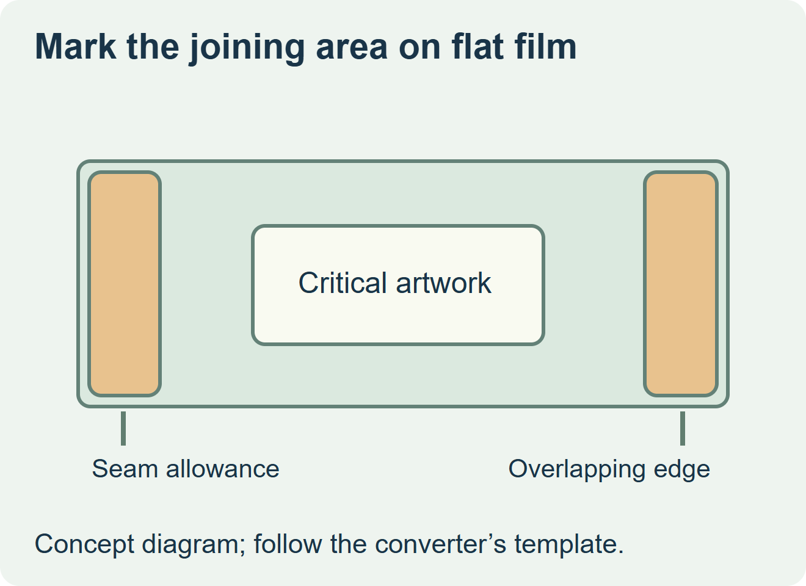
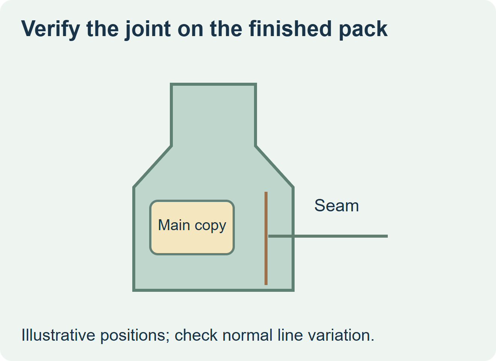

Move essential text or artwork away from the seam unless the converter and applicator can demonstrate a reliable finished position. Ask for the actual sleeve template before approving the print. It should identify the joining area, any permitted printed overlap, the finished flat width of the tube and where critical artwork can sit.


Check the two drawings that define the joint
The first drawing is the flat film before seaming. It shows where the converter can print and where the edges meet. The second is the applied sleeve on the actual bottle. It shows where the overlap and artwork appear from the front, side and back. Equipment maker Jindali explains how the layout accounts for the glue area, bleed and cuts. Have the selected converter provide its own approved drawing. Jindali’s shrink sleeve layout guide
| What you see in the proposal | Action before ordering | Evidence to keep |
|---|---|---|
| Required copy crosses the seam or could reach it after normal placement variation | Move the copy to a supported panel or review a different seam reference | Approved layout and shrunk samples showing the available clearance. |
| An optional background pattern crosses the join | Agree what visual discontinuity is acceptable | Seamed and shrunk sample at the planned view. |
| Artwork needs a particular seam relationship to the bottle | Confirm which reference the line can hold | Samples through the expected application and shrink process. |


Check the seam after the sleeve shrinks
Ask the converter and packer to label each trial bottle with the actual film, artwork revision and bottle reference. Look at the seam through the whole height, including a tapered shoulder if the sleeve reaches it. Read the required fields from the intended viewing position. A designer can place a mockup precisely by hand, so use a representative line trial when the artwork depends on repeatable position.
For a hypothetical juice bottle with an illustration wrapping around the shoulder, allow the pattern to meet at the back only if the finished joint looks acceptable. Keep the product name and other essential fields in the agreed clear panel. If a different bottle or seam position is proposed, ask which layout proof must be updated before placing the order.
Discuss the unresolved label requirement
Send the bottle drawing and samples, the converter’s sleeve drawing, the intended seam location, the artwork fields that must remain clear, the applicator and quantities. Review beverage label options and prepare a label specification inquiry. The contact page opens an email draft and lists email or WhatsApp for attachments. Supply, proof options, testing, pricing and timing require project confirmation.